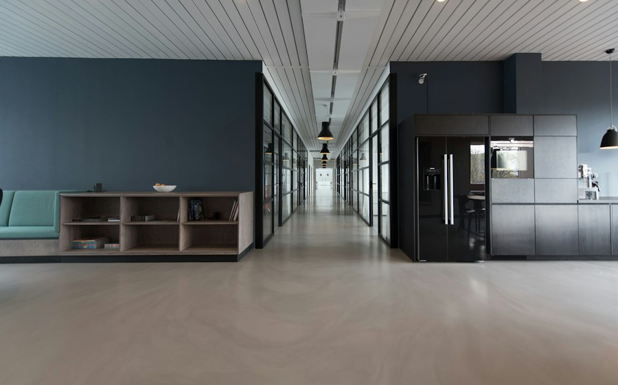

Negocios de servicio
Negocios de servicioCómo aparecer en Google Maps si trabajas a domicilio
Configura una presencia local precisa sin publicar una dirección donde no recibes clientes.
Leer la guíaGuías claras sobre páginas web, SEO local y herramientas digitales para tomar mejores decisiones para tu negocio en Estados Unidos.
Negocios de servicioConfigura una presencia local precisa sin publicar una dirección donde no recibes clientes.
Leer la guíaInvita a clientes reales a compartir opiniones honestas y responde con profesionalismo.
Leer la guía Restaurantes
RestaurantesCómo hacer que los clientes encuentren el menú y sepan cómo pedir o reservar.
Leer la guíaOrganiza servicios, credenciales, citas y contacto protegiendo la privacidad de pacientes.
Leer la guíaCompleta categorías, horarios, servicios, fotos y enlaces para ayudar a tus clientes a encontrarte.
Leer la guíaRevisa indexación, ficha, datos y relevancia antes de cambiar tu estrategia local.
Leer la guíaAcciones para mejorar la presencia local sin recurrir a promesas de posiciones garantizadas.
Leer la guía Servicios profesionales
Servicios profesionalesPresenta experiencia, servicios y vías de contacto con información clara y verificable.
Leer la guía
Web bilingüeDecide cuándo ofrecer dos idiomas y cómo organizar páginas, navegación y traducciones.
Leer la guíaArtículos 16–24 de 24